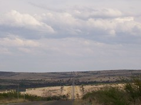

Inuvik to Ushuaia
View La Bufa in the bottom of Copper Canyon, Mexico

Here is a photo overlooking the road to La Bufa and eventually to Batopilas.
This area is the home to the famous Indians Traumara (Raramuri). One of the oldest people in North America, migrated to this area to avoid conflict with the Spanish Missionary. This shy group of people who live a subsistence life style can be recognized by their unique clothing and dark skin. The men wear a white loincloth, sandals, and an array of shirts and the women wear colorful layered blouses and skirts and large scarfs of multi designs.
It does appear the Traumara (Raramuri) have huge struggles with health, farming in this harsh climate though they have some of the most efficient farming methods known, and preservation of a culture that is in conflict with a monetary society.
The death rate for women giving birth is one in ten. The death rate amoungst children under 5 is 50 percent. Poverty amongst these people in this area is so rampant it touches everyone. read more here... lee mas aquí... »
Batopilas aquaduct

Along the way she swam in the Rio Batopilas river, panned for silver, meet a goat herder, and also a guide on a horse returning from a 3 day trip to Urique and back to Batopolis. Most stunning were the flowering cactus and trees found in this deep desert canyon.
Road down to batopilas

If you look very closely at this photo you may see the foot paths and used by the Tarahumara (Raramuri) Indians to access the resources of this canyon and the way the people of this region travel to and from the outback.
We hitched a ride down to the bottom with four Canadians driving this dusty, teeth rattling, back jarring road. It took around 5 hours to drive this 65k (40 mile) road. Around every corner was a new photo opportunity. We also hitched back with a kind couple from Mexico City who had hired a guide to bring them down and back up to creel.
(Thank you folks for the ride and the time we had to share).
The road was only really wide enough for one car so if another vehicle came around the corner, one of the drivers had to back up or down the road to a spot wide enough for both to squeeze by.
Randy at breakfast

We have decided this dish is an excellent meal to power us on our bike ride. (Protein, Fat, and carbohydrates). Tamales are another food we have discovered is an excellent biking food.
Update: New Pictures and a Podcast (Audio)
- Our location: We're in Parral, about 200 miles south of Chihuahua, having exited the southeast end of the Copper Canyon region. Nancy did up a wonderful new map of our route (below) so you can see our route.
- New pictures: There are a lot of new pictures on the photos page.
- Podcast: We have started an experimental podcast (audio listen) for you. Click the Podcast button on the top of the page.

Parral to Durango and then Zacatecas
About 56 kilometers (35 miles) south Parral as we rode into the town of Las Nieves, the wind blew sheets of dust across the town, the roads and us. It was so impressive to see the wind blowing sideways full of the dust and particles of the arid landscape. We bought a few things to eat from the local Pemex gas station and continued on our way to find Poncho Villa’s Villa in Canutillo. The villa was a run-down complex with a handful of building with large photos and a bit of history about this Mexican who both was a local hero, a famous general of the Mexican revolution, and renegade (from the perspective of the U.S.). After the visit to the museum we decided to find a hotel because we both were sick with a cold and did not have the energy to continue. We found a clean economical room next to the bus stop which we laid low for two days recovering from our ailments.
We headed out two days later feeling somewhat better. The winds where more gentle and the landscape was the same.

(You may want to click the "read more" below to continue - this is a long one.)
Where we are: Early April 2007
There are new pictures on the photos page...
April 15 - Tax Time
Hi there all you folks working on your taxes at home! We know that it's tax weekend and wish you well. Some of you asked how we handle the tax event while we're on the road... Well we just do it electronically with Turbotax like we've done for years. We filed in February and got the refund in early March. Not to rub it in or anything.
But that brings to mind a story from the Oregon coast last fall. As you can imagine, not everybody we meet understands what we're up to or why - or can relate to it. We were talking to one fellow who was just flabbergasted at our trip and the informality and unplanned-ness of it. He said "so do you sleep under bridges?"... We said, "well, we have". He was horrified. But his next question was the most memorable indication of his disapproval: "But your taxes - how do you pay your taxes?". We explained that with little income you have little taxes. But we remain amazed that he was more taken with our disconnection from the tax system than with anything else about the trip.
We all make a choice in life. Stay within the lines or venture outside the box. He did not understand there are amazing things to experience outside the normal perimeters. We love to explore the life outside this box. And all you folks who are joining us, are also enjoying life outside this box. And for this we thank you for sharing life our trip.
We all have to pay taxes, we just do it online. Computers sure have changed our lives. Has the world become smaller or are we just more connected. What do you think?
Folkloric dancers in Zacatecas - Video
Riding to Guanajuato
It was a wonderful road with all the things we love. It wound its way up through a forested canyon on a good dirt road. There was so little traffic that we could let our minds wander or put on our head phones and rock to music as we rode.